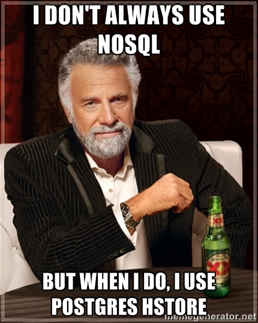
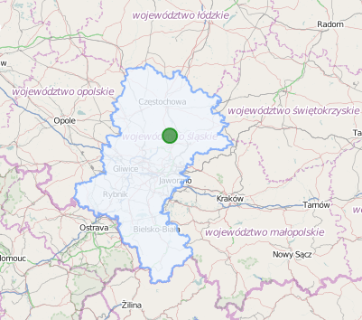

Deep into Postgres
SRUG, Gliwice, 11.04.2014
Michał Krzyżanowski
@krzyzak
Łukasz Strzebińczyk
@KillaPL
Use the right tool for the right job
MySQL
MongoDB
PostgreSQL
UUID as Primary key
CREATE EXTENSION "uuid-ossp";
SELECT uuid_generate_v4();
#=> cf4fadf7-22e0-4f46-bdda-232b7883a1c9
create_table('my_table_name', id: :uuid) do |t|
t.string 'title'
end
User.create.attributes
# => {"id"=>"468cdfa4-1c11-4e34-a996-ecc561c0e866", (...) }
Hstore
JSON
PostGIS
Spatial and Geographic Objects for PostgreSQL
PostGIS – gentle introduction

PostGIS – gentle introduction

PostGIS – gentle introduction
SELECT ST_Distance(
ST_GeometryFromText('Point(-118.4079 33.9434)'), -- Los Angeles
ST_GeometryFromText('Point(2.5711 49.0039)')) -- Paris
AS geometry_distance,
ST_Distance(
ST_GeographyFromText('Point(-118.4079 33.9434)'), -- Los Angeles
ST_GeographyFromText('Point(2.5711 49.0039)')) -- Paris
AS geography_distance;
geometry_distance | geography_distance
-------------------+--------------------
121.912825827515 | 9125804.29716346
Postgis – select POI within 2km
Create column
ALTER TABLE pois ADD COLUMN location geography(Point,4326);
Add POI
INSERT INTO pois(name, location)
VALUES(
"Sample",
ST_MakePoint(52.228, 21.011), 4326)
);
Select POIs within 2km of desired location
SELECT * FROM pois WHERE
ST_DWithin(
location,
ST_MakePoint(52.218, 21.019), # desired point (Warsaw)
2000 # Meters
)
Postgis – shapes example
Postgis – shapes example
ALTER TABLE districts ADD COLUMN shape geography(MultiPolygon,4326);
INSERT INTO districts(name, shape)
VALUES(
"Silesian",
ST_PolygonFromText('POLYGON((-71.1776585052917 42.3902909739571,-71.1776820268866 42.3903701743239,
-71.1776063012595 42.3903825660754,-71.1775826583081 42.3903033653531,-71.1776585052917 42.3902909739571))')
);
SELECT name FROM districts WHERE
ST_CONTAINS(
shape,
ST_MakePoint(52.218, 21.019)
)
But there’s more!
- ST_Area – Returns the area of the surface if it is a polygon or multi-polygon.
- ST_Centroid — Returns the geometric center of a geometry.
- ST_Touches — Returns TRUE if the geometries have at least one point in common, but their interiors do not intersect.
- ST_ShortestLine — Returns the 2-dimensional shortest line between two geometries
- And many, many more…
Fun fact
SELECT * FROM my_table WHERE 1 = 0;
Total runtime: 0.227 ms
1_000_000.times{|i| MyMongoDocument.new(title: "Document #{i}")
Benchmark.measure{ Document.where(1 => 0) }
=> #<Benchmark::Tms:0x00000101d5a208 @label="", @real=1.603334,
@cstime=0.0, @cutime=0.0, @stime=0.0, @utime=0.009999999999990905,
@total=0.009999999999990905>